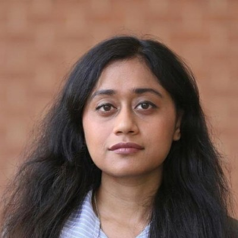
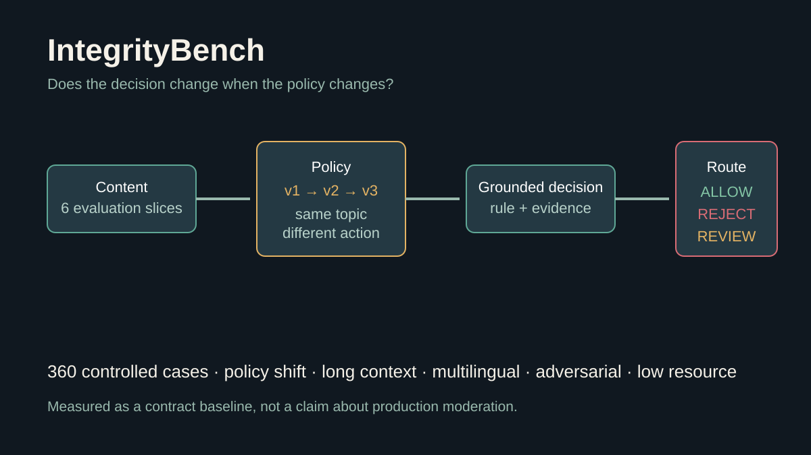
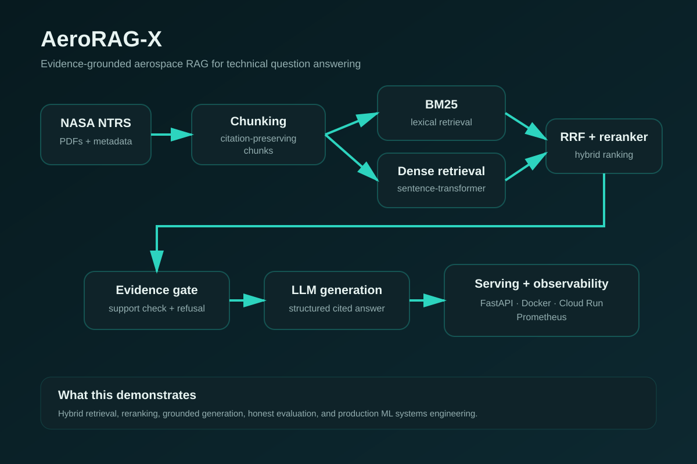
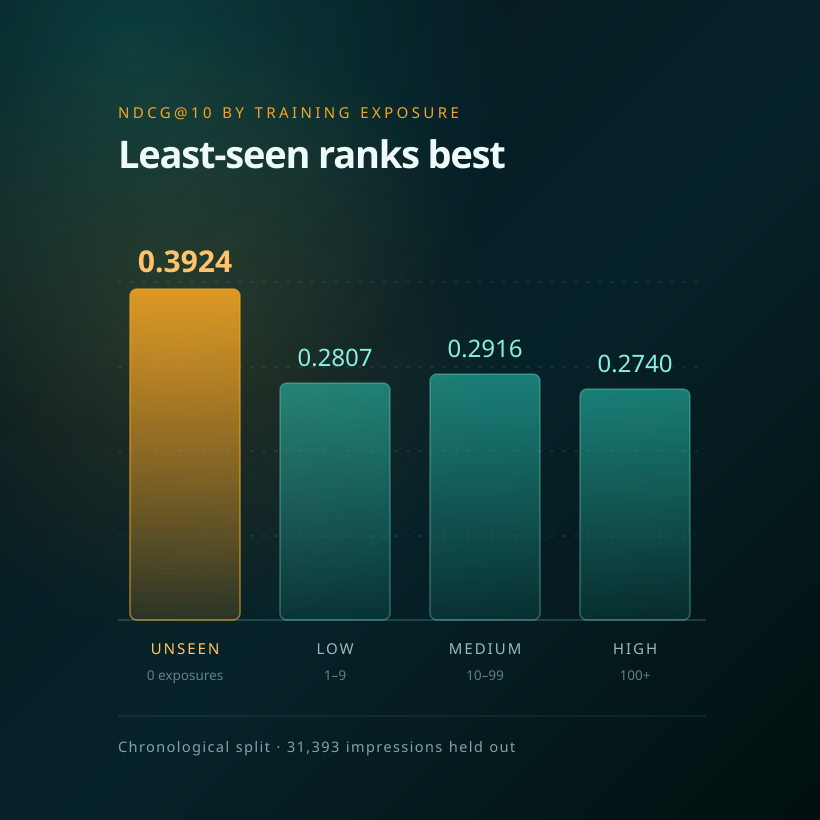
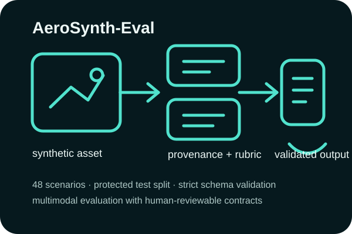

Search, retrieval & recommendation
Hybrid retrieval, reranking, recommender systems, ranking metrics, leakage-safe evaluation, statistical comparison, and failure analysis.
Machine Learning Engineer · Georgia Tech · Ex-Rolls-Royce
I build ML systems from modeling and evaluation through deployment and on-device inference.
My work spans retrieval and ranking, recommender systems, RAG and LLM evaluation, time-series ML, and efficient inference. I care about building systems that are useful, measurable, and reliable outside a notebook.

I like taking machine learning beyond model training: setting clear baselines, evaluating carefully, building usable interfaces, monitoring behavior, and understanding why a system fails. My aerospace background adds a strong focus on reliability, reproducibility, and engineering trade-offs.
Hybrid retrieval, reranking, recommender systems, ranking metrics, leakage-safe evaluation, statistical comparison, and failure analysis.
Evidence-grounded RAG, LLM evaluation, agentic workflows, PEFT/LoRA experiments, multimodal evaluation, provenance, and safe refusal behavior.
PyTorch FSDP, DeepSpeed, Megatron-LM, vLLM, SGLang, TensorRT-LLM, FastAPI, Docker, CI/CD, observability, ONNX, Core ML, Qualcomm QNN, and deployment-focused benchmarking.

A 360-case benchmark across policy shifts, long context, multilingual content, adversarial transformations, and limited-label settings. Decisions include a rule, evidence, confidence, remediation, and a human-review flag.
The static-policy control reached 0.620 macro F1 with a 0.286 false-acceptance rate; current-policy retrieval reached 1.000 on the controlled generator. I treat that as a benchmark construction check, not a production moderation result.

Evaluation-first GenAI system over 3,233 citation-preserving NASA NTRS chunks, combining BM25 + dense retrieval, Reciprocal Rank Fusion, cross-encoder reranking, pgvector, evidence-sufficiency checks, and application-controlled citations.
Added PEFT/LoRA experiments, bounded LangGraph agents, protected evaluation, containerized FastAPI services, and controlled FSDP, DeepSpeed, Megatron-LM, vLLM, SGLang, and TensorRT-LLM experiment paths. Their GPU result tables remain pending rather than being presented as completed benchmarks.

Leakage-safe MIND recommendation now paired with a separate Go, Kafka, PostgreSQL, and FastAPI article path built for idempotency, dead letters, and freshness-aware ranking.
NDCG@10 0.3664 offline. In a 500-event local run, publish p99 was 44 ms, index-freshness p95 was 79 ms, all duplicate probes were caught, and a stopped consumer's partition recovered in 5.7 seconds.

Built an aircraft-design ML benchmark spanning PyTorch surrogate modeling, uncertainty estimation, constrained optimization, physics validation, ONNX deployment, FP16/INT8 optimization, Core ML benchmarking, and Qualcomm QNN deployment.
QNN deployment retained 0.996953 mean held-out R²; a drifting native INT8 candidate was rejected by policy. An installable Safari app now provides the no-Xcode iPhone path.

Reproducible VLM evaluation framework for synthetic aerospace inspection imagery with a frozen 48-scenario benchmark, protected 36/12 development-test split, deterministic assets, SHA-256 provenance, annotation workflows, and typed evaluator contracts.
A free Kaggle P100 batch attempted all 12 development cases: eight passed the strict response schema, while four JSON failures were retained. This is execution evidence, not human-alignment evidence.

Built a leakage-resistant failure-detection workflow over 15,120 simulated thrust profiles using time-series feature extraction, statistical analysis, clustering, and supervised classification.
96.8% accuracy · 0.986 ROC AUC on previously unseen motor geometries, with emphasis on generalization and failure analysis.
Other work: Atlanta mobility resilience · surrogate model learning · sustainable-aviation modeling · walk-forward equity backtesting
Graduate Research Assistant under Prof. Dimitri Mavris · Machine Learning & Applied AI
Built time-series ML for rocket-motor failure detection across 15,120 simulations; contributed to Delta Air Lines-sponsored HERO work on source-aware retrieval for safety analysis; and developed surrogate models for the GREEN TEA sustainable-aviation program.
Machine Learning Engineer
Built Python-based diagnostic, anomaly-detection, predictive-maintenance, and 1 Hz/10 Hz time-series workflows for multivariate aircraft-engine sensor data using Azure Databricks, working with lifecycle engineers to validate failure modes and maintenance insights.
Data Science Intern
Worked on applied ML for aircraft-engine performance and component health, including exploratory data analysis, feature engineering, predictive modeling, anomaly detection, and model evaluation.
Student Chair
Led graduate-student communications and community engagement, coordinating peer networking and chapter outreach.
I am focused on search and retrieval, recommendation systems, GenAI evaluation, production ML systems, and efficient on-device inference. Across these areas, I build from measurable baselines through deployment, observability, and failure analysis.
For Machine Learning Engineer, Applied ML, Search/Ranking, GenAI Evaluation, or ML Systems opportunities, contact me at tsarkar34@gatech.edu.